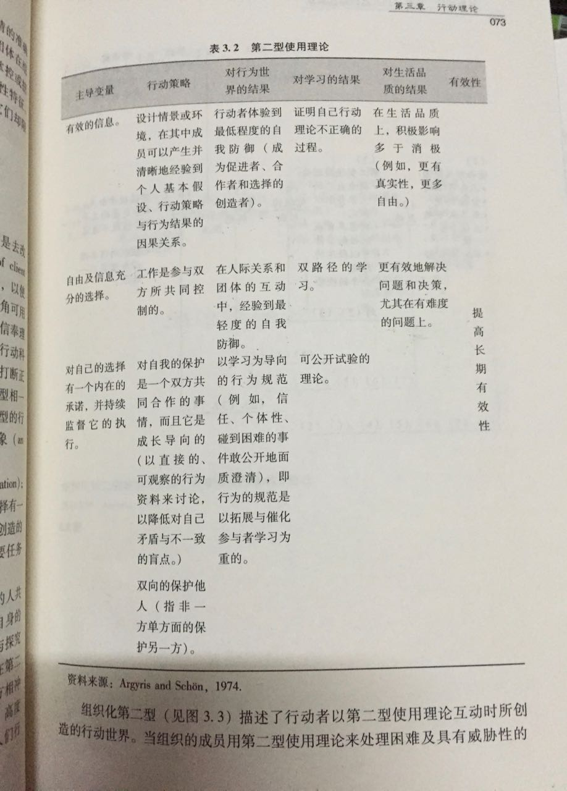

开放性招聘 008 ：左手预见，右手悠闲
一般企业会认为，足以摆平或解决企业经营过程中的各种棘手问题的人，就是优秀的管理者或者核心人才，其实这是有待商榷。
俗话说：“预防重于治疗”，能防患于未然之前，更胜于治乱于已成之后，由此观之，企业问题的预防者，其实是优于企业问题的解决者。
预见性招聘
企业的发展越来越快，对人才的需求的也与日剧增，除了传统的被动招聘、救火式招聘，还可以做什么呢？
换一个角度，我们如果是和业务销售部门一样考察KPI ，我们是否会更主动？
招聘其实大部分时候，还是必须要做到预见性的准备，能防患于未然之前。
这次谈的预见性招聘，其实也是比较基本的实践。
具体是在与用人部门形成周期性的沟通协调机制：
通过与用人部门沟通，如果能够提前了解部门未来的招聘需求、想法，提前储备人才，那自然是自己大家都有所准备，提前思考问题。
经常性与面试官沟通部门用人情况，包括不限于——员工表现、工作饱和程度、团队工作效率、员工离职预判、团队氛围，帮助预判招聘需求。
具体行动
比如：
每年沟通用人编制的时候，就要与面试官沟通招聘计划。——年度招聘计划沟通、实施时间、招聘时间表、预计招聘方案（实施难度、人才分布、到岗时间）
平时工作中，在一些关键节点进行预防和预备：比如调整离职流程——在员工递交辞职信时，不仅强调要做离职面谈，也要求面试官提前通知HR，对于关键岗位的空缺，用人需求在审批的同时，招聘人员就可以储备、开始离职员工替代招聘。
如果离职人员较多，要具体跟进分析，根据离职情况对应实施不同的应对方案。继续招聘的同时，协调用人部门改进措施。比如发现每个月离职人员 离职面谈的跟进分析——用人部门的用人方式、团队氛围、工作压力应对，对应可以提供哪一类的辅助、留人、岗位设计方案；
也可以是
- 对关键岗位、常规岗位做好预案，比如，季节性和项目性的需求岗位，人才库里是否已经做到了提前储备人才。
还可以根据职位的工作要求，与用人部门沟通过渡方案，比如与用人部门分析使用实习生的可能性，如果部门适当地使用实习生 ，是否可以一定程度缓解人员短缺给部门造成的压力？同时提前培养人才？
平时的沟通中基于员工的发展，也不妨委婉和用人部门领导沟通，提醒加强人才培养，锻炼 提升团队工作协同能力。
甚至，如果是有顶尖的人才需求、创意人才需求，还有必要提前储备人才，或者提前做好多招聘 2-3 个同类人才的应对方案。 比如，在这类岗位的面试中，如果候选人中第一第二候选人都是满意的人才，那么这个时候，则要更多考虑是否能够同时 都招聘进来——这个方案最好还是提前构思。当然这一块是紧密联系着企业战略的，这个也看招聘人员处在哪一级岗位，毕竟这决定了岗位上能获得的信息的多少。
为部门储备人才，也不光是做好人，也免不了要和用人部门沟通好，哪些人员是预备要淘汰，或因员工技能跟不上业务的发展需要，或因员工工作表现落后。这个时候两手工作都得做到。
悠闲之外，更进一层
大部分人眼中看到用人火急火燎的情况，很多情况下，无非是预判性不够，基本的操作不扎实。
正常情况下，做好预判性的招聘，大部分时候，是你 push 用人部门，而不是用人部门来 push 你。
真正困难而难以拔除的，还是个中各方利益的焦灼。
这看起来已是招聘之外，岗位之外的事，事实如此吗？
然而事实未必如此，6 个模块是手拉手一个环。 再想更进一层楼，还是得看见其中的各方利益的流动，扭成合力。
也许行动科学创始人、管理大师 阿吉里斯在一系列著作中论述的「第二型使用理论」是个好的脚手架，在这个路途可以帮我们预判并找到合力，照亮远行的路，用里面的策略走的远些。
摘录如下，欢迎大家关注我们，一起挠猴子，一起探讨。

欢迎联系 Arvin Yu , 邮箱：yuyandong@outlook.com
本作品采用 知识共享署名-非商业性使用-禁止演绎 3.0 Unported许可协议 进行许可。
Copyright © 2015 Powered by ArvinYu, Theme used GitHub CSS.